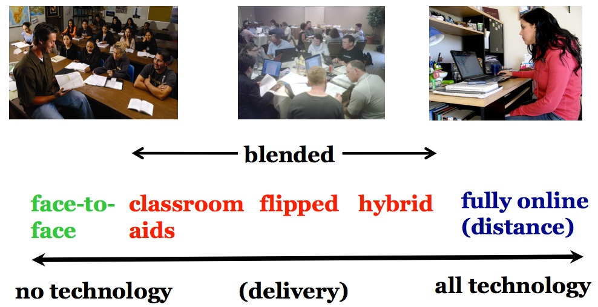

10.1 O continuum da aprendizagem baseada em tecnologia


Nos Capítulos 7, 8 e 9, exploramos a utilização de mídias integradas num determinado curso ou programa. Neste capítulo, o foco incide sobre a decisão de oferecer um curso ou programa completo de forma parcial ou totalmente on-line. No Capítulo 11, o foco estará em decidir quando e como adotar uma abordagem que incorpore a "abertura" no seu planejamento e distribuição.
10.1.1 As muitas faces da aprendizagem on-line
Aprendizagem on-line, aprendizagem híbrida (blended learning), aprendizagem invertida (flipped learning), aprendizagem flexível, aprendizagem aberta e educação a distância são termos frequentemente utilizados de forma intercambiável, embora apresentem diferenças significativas de significado. Mais importante ainda, estas modalidades de ensino, outrora consideradas esotéricas e fora da corrente principal do ensino convencional, assumem uma importância cada vez maior e, em alguns casos, estão a tornar-se a própria corrente principal. À medida que professores e instrutores ganham maior familiaridade e confiança com a aprendizagem on-line e as novas tecnologias, assistiremos a uma maior inovação na integração do ensino on-line e do presencial.
10.1.1.1 Variações sobre a aprendizagem híbrida
No momento em que este livro foi escrito, era possível identificar pelo menos os seguintes modos de distribuição:
- ensino em sala de aula sem qualquer tecnologia (o que é muito raro hoje em dia);
- aprendizagem híbrida (blended learning), que engloba uma grande variedade de planejamentos, incluindo:
- aprendizagem melhorada por tecnologia, ou seja, a tecnologia utilizada como auxiliar de sala de aula; um exemplo típico seria o uso de slides de PowerPoint e/ou clickers numa aula expositiva;
- a utilização de um sistema de gestão de aprendizagem (LMS) para apoiar o ensino presencial, para armazenar materiais de aprendizagem, disponibilizar um cronograma de tópicos da disciplina, para discussões on-line e para a submissão de trabalhos dos estudantes, mantendo-se a docência predominantemente através de sessões em sala de aula;
- a utilização de sistemas de gravação de aulas para salas de aula invertidas, em que os estudantes assistem à aula através de vídeo transmitido (streaming) e depois deslocam-se à sala de aula para debates ou outras atividades práticas; ver, por exemplo, um curso de cálculo oferecido na Queen's University, no Canadá;
- um semestre presencial no campus e dois semestres on-line (um modelo adotado na Royal Roads University);
- aprendizagem híbrida ou flexível que exige a reformulação do ensino para que os estudantes possam realizar a maior parte da sua aprendizagem on-line, deslocando-se ao campus apenas para atividades presenciais muito específicas, como laboratórios ou trabalhos práticos manuais que não podem ser realizados satisfatoriamente on-line (ver exemplos na Seção 10.1.1.2 abaixo);
- aprendizagem totalmente on-line sem aulas presenciais ou atividades no campus, que constitui uma modalidade de educação a distância, incluindo:
- cursos para obtenção de créditos acadêmicos, que cobrem habitualmente os mesmos conteúdos, competências e avaliações da versão presencial no campus, mas encontram-se disponíveis apenas para estudantes matriculados num programa;
- cursos sem atribuição de créditos oferecidos exclusivamente on-line, tais como ações de formação profissional contínua;
- cursos totalmente abertos, tais como os MOOCs.
Mais de um terço dos estudantes do ensino superior nos EUA frequentam atualmente pelo menos uma disciplina totalmente on-line, e cerca de 15% dos estudantes realizam o seu percurso exclusivamente on-line. Embora as matrículas globais no sistema de ensino superior norte-americano tenham registado um ligeiro declínio (quase 4% entre 2012 e 2016), as inscrições on-line cresceram cerca de 5% no mesmo período (Seaman et al., 2018). Nas instituições de ensino superior canadenses em 2017, aproximadamente 8% de todas as inscrições em disciplinas de crédito realizaram-se totalmente on-line (Donovan et al., 2018).
10.1.1.2 Aprendizagem híbrida redesenhada
Existe um desenvolvimento relevante no âmbito da aprendizagem híbrida que merece menção especial: a reformulação integral das disciplinas presenciais para tirar melhor partido do potencial da tecnologia, o que designo por aprendizagem híbrida redesenhada (hybrid learning), combinando a aprendizagem on-line com interações presenciais focadas em pequenos grupos ou misturando experiências de laboratório físicas e virtuais. Nestes modelos, o tempo de contato presencial é geralmente reduzido, por exemplo, de três aulas semanais para uma, libertando tempo para os estudantes estudarem on-line.
Na aprendizagem híbrida redesenhada, toda a experiência de aprendizagem é reformulada, promovendo uma transformação do ensino no campus estruturada em torno do uso da tecnologia. Por exemplo:
- Carol Twigg, no National Center for Academic Transformation, colaborou durante muitos anos com universidades e politécnicos na reformulação de disciplinas com turmas numerosas de aulas expositivas, com o objetivo de melhorar a aprendizagem e reduzir custos através da tecnologia. Este programa decorreu com sucesso entre 1999 e 2018;
- A Virginia Tech desenvolveu há vários anos um programa de sucesso para o ensino de matemática do primeiro e segundo anos, estruturado em torno da aprendizagem assistida por computador disponível 24 horas por dia, 7 dias por semana, apoiada por docentes e assistentes de ensino itinerantes (Robinson e Moore, 2006);
- A Universidade da Colúmbia Britânica lançou em 2013 a sua iniciativa de aprendizagem flexível focada em desenvolver, distribuir e avaliar experiências de aprendizagem que promovam melhorias eficazes e significativas no desempenho dos estudantes. A aprendizagem flexível viabiliza flexibilidade pedagógica e logística para que os estudantes tenham mais escolhas no seu percurso, incluindo quando, onde e o que pretendem aprender.
Assim, a "aprendizagem híbrida" (blended learning) pode traduzir-se numa reflexão ou reformulação mínima do ensino presencial, como a mera utilização de auxiliares de sala de aula, ou num redesenho completo como nas disciplinas de planejamento flexível, que procuram identificar as características pedagógicas únicas do ensino presencial, recorrendo à aprendizagem on-line para assegurar o acesso flexível ao restante percurso letivo.
Os docentes em mais de três quartos das instituições de ensino superior canadenses em 2017 integravam a aprendizagem on-line com o ensino presencial, mas não mais de uma em cada cinco instituições dispunha de um volume significativo de disciplinas neste formato. Contudo, a maioria das instituições prevê um aumento rápido de disciplinas nesta modalidade nos próximos anos (Donovan et al., 2019).
10.1.2 O continuum da aprendizagem on-line



Assim, delineia-se um continuum da aprendizagem baseada em tecnologia, conforme ilustrado na Figura 10.1.2 acima.
10.1.3 Decisões, decisões!
Estes desenvolvimentos abrem um novo leque de decisões para os formadores. Cada docente necessita agora de decidir:
- que tipo de curso ou programa de estudos devo oferecer?
- quais fatores devem influenciar esta decisão?
- qual é o papel do ensino presencial quando os estudantes podem hoje, de forma crescente, estudar a maior parte dos conteúdos on-line?
- devo abrir o meu ensino a qualquer pessoa e, se for o caso, em que circunstâncias?
Este capítulo visa ajudá-lo a responder a estas questões.
Referências
Bates, A. and Poole, G. (2003) Effective Teaching with Technology in Higher Education: Foundations for Success San Francisco: Jossey-Bass
Donovan, T. et al. (2019) Tracking Online and Distance Education in Canadian Universities and Colleges: 2018 Halifax NS: Canadian Digital Learning Research Association
Robinson, B. and Moore, A. (2006) ‘Virginia Tech: the Math Emporium’ in Oblinger, D. (ed.) Learning Spaces Boulder CO: EDUCAUSE
Seaman, J., Allen, I., and Seaman, J. (2018) Grade Increase: Tracking Distance Education in the United States Wellesley MA: The Babson Survey Research Group
Atividade 10.1 Onde no continuum estão os seus cursos?
- Se se encontra a lecionar atualmente, em que ponto do continuum se situa cada uma das suas disciplinas? É uma classificação simples de efetuar? Existem fatores que tornam difícil decidir onde cada disciplina se enquadra?
- De que forma foi decidido qual seria o modo de distribuição das disciplinas que leciona? Se a decisão foi sua, quais foram as razões para posicionar cada curso nesse ponto do continuum?
- Encontra-se satisfeito com a(s) decisão(ões) tomada(s)?
- Qual é o perfil dos estudantes que frequentam cada modalidade de disciplina?
Não é disponibilizado feedback para esta atividade.